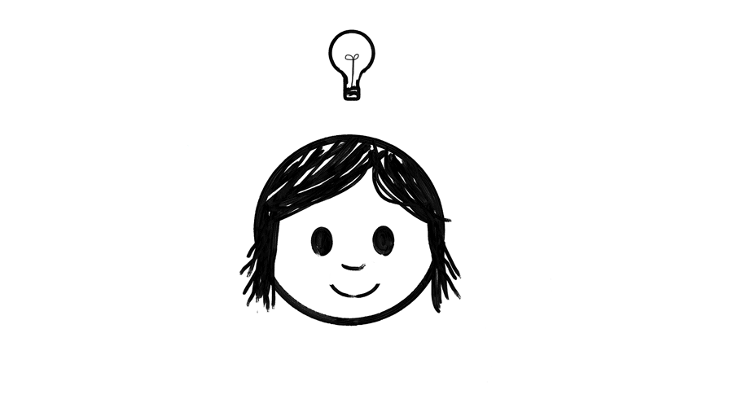

Not only will they get the benefits of improved motor skills and language development, and do better in math, science, and writing, but the inventiveness that is practiced and developed doing art is an even more essential 21st century skill. Also, its fun! Art is the kind of unstructured play that is critical for a well developed, and well adjusted child.
The arts are where children have the space for the messiness and risk-taking needed for creative thinking - which is so different from much of education, which is focused on moving towards the "right" answer and away from the "wrong" answer.
Art activities where there is no "wrong" answer encourage children to take risks with their ideas. Children are given a space where they can exercise problem solving, critical thinking, and decision making, without the fear of being "wrong" hanging over their head and restricting them. The practice of inventiveness that happens in art making will help them succeed everywhere, because in problem solving in real life, there is often not a clear cut "right" answer, and innovative solutions are brought to the table by those with creative thinking skills.
Inventiveness is empowering. Physically creating and changing drawings and sculptures empower children to not only better understand the graphic worlds they interact with on tablets, but to know they have the power to create and change those objects and worlds.
Unstructured play is fun and instinctual. When humans or animals play, they feel joy!
Make sure that kids in your life and your community get art in their lives, so that they can have the best advantage for being the smartest, happiest, leaders of tomorrow.
Learn More HERE!